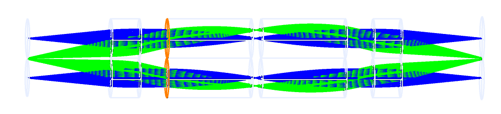

Lens design · GRIN optics
Optical Systems
Lens designs modeled and optimized in Zemax OpticStudio.
Four GRIN rods, unit magnification.
Optical designs
Each design has its own page with specs, approach, and plots.
GRIN miniscope: 1:1 relay for fluorescence imaging
A miniature fluorescence microscope optical system designed and optimized in Ansys Zemax OpticStudio.
As part of the Computational Imaging Systems Lab at the University of California, San Diego, I designed and optimized a miniature fluorescence microscope (miniscope) built using multiple GRIN (gradient-index) rod lenses. Inspired by the "Krill-Eye" Optical System proposed by researchers at the MIT Media Laboratory [1], the lenses are cascaded into a superposition compound system, and the layout is designed to accommodate an emission bandpass filter and an external illumination system. The goal is to achieve 1:1 magnification and gapless imaging in order to produce properly superimposed images and introduce more symmetry. We aim to maximize the numerical aperture and the usable field of view while minimizing Seidel aberrations.
- Tool
- Zemax OpticStudio
- Wavelength
- 0.530 µm
- Elements
- 4 GRIN rods
- Object NA
- 0.1
- Fields
- 0 and 1 mm object height
- Magnification
- 1:1
- Status
- In progress

Why GRIN lenses
GRIN rod lenses bend light with a smoothly varying, parabolic refractive-index profile. That internal symmetry corrects spherical aberration, and 1:1 gapless imaging is much easier to achieve with GRIN lenses. They are also relatively cheap, extremely compact, and easy to mount and stack, a natural fit for a miniscope where size and weight are tightly constrained.
A rod's length is measured in pitch (P), the fraction of one full sinusoidal ray period. A 0.25P rod collimates light from a point on its face. A 0.5P rod forms an inverted 1:1 image, which is what each rod in this relay does. The first two GRIN lenses serves to have a similar effect; however, it is about a inverted, 0.5x magnfiication image rather than -1, and the last two serves to magnify the image to achieve 1X magnification.
System architecture
- Cascaded GRIN relay. Several GRIN rod lenses are arranged as a superposition compound system. Each set of the four GRIN lenses as shown above produces a 1:1 image of the same object point at the same location on the image plane. Superposing these images gathers more light than a single narrow rod and increases the usable field of view, while the rods’ internal symmetry keeps spherical aberration, distortion, coma, and lateral color low.
- External illumination. The design leaves room for a bandpass filter for the emitted fluorescence between the lenses. To keep the system compact, an external illumination system will be used, which inherently separates the excitation and emission light and removes the need for a dichroic mirror or beamsplitter.
- Two-field model. The system is evaluated on-axis and at a 1 mm object height, which shows how performance degrades toward the edge of the field.
Design goals and optimization
The main trade-off in this design is field of view and numerical aperture versus aberration. A wider field is more useful for imaging, and numerical aperture helps with resolution and light collection, but off-axis rays push the Seidel aberrations (spherical aberration, coma, astigmatism, field curvature, and distortion) up quickly. My workflow:
- Set up the prescription in sequential mode with the GRIN rod lenses, and trace both fields at 0.530 µm.
- Define merit function targets for unit magnification and a small spot at the image plane.
- Iterate on lens spacing and focus positions, and test how small shifts of individual surfaces affect the on-axis and off-axis spots.
- Check the front of the first lens for vignetting. A few marginal rays were clipped there, so I worked on trimming them out of the beam.
Results so far
On-axis performance is essentially diffraction-limited, and the image height is within half a percent of the object height, so the relay is very close to true 1:1. The off-axis field is the weak point. Its spot is larger and elliptical, which points to residual astigmatism and field aberrations, and that is where my current optimization effort is focused.
Next steps
- Reduce the off-axis spot size while holding the on-axis performance.
- Design the external illumination system.
- Physically build a prototype.

Design title
Replace this page with your next design.
Describe the goal, the tool, the approach, and the result. Add ray-fan plots and spot diagrams.
Design title
Replace this page with another design.
Add MTF curves, a tolerance study, or a comparison against the first design.
About
Write two or three sentences here: who you are, what you study or work on, and what kind of optical problems you like. Mention the tools you use, such as Zemax OpticStudio, and the hardware you work with on the bench.
Contact
Open to conversations about optical design.